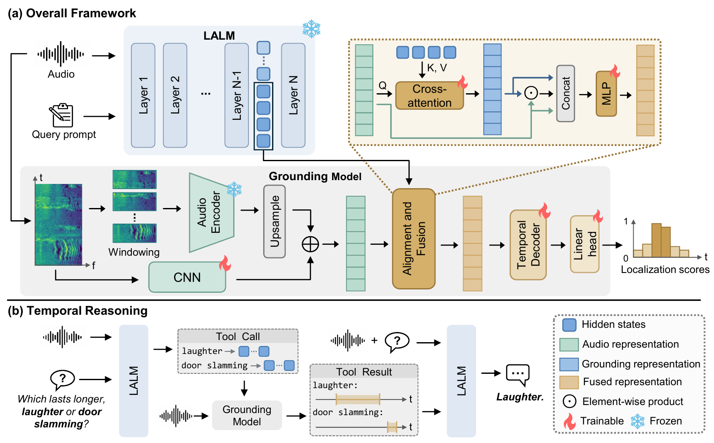

Augmenting Large Audio-Language Models with Frame-Level Grounding for Fine-Grained Temporal Perception
University of Science and Technology of China / Singapore Institute of Technology
Abstract
Large Audio-Language Models (LALMs) have substantially advanced general audio understanding, yet they remain limited in fine-grained temporal perception, particularly in precise event localization. Existing approaches primarily post-train LALMs to predict event boundaries as timestamp tokens. However, this generative formulation lacks explicit correspondence between the timestamp predictions and fine-grained acoustic evidence, limiting the precision and reliability of temporal localization. To address this issue, we augment the LALM with a dedicated frame-level grounding model while leveraging its semantic modeling capability to represent the event query. Specifically, the frozen LALM encodes the event query with audio as context, and the grounding model combines these query representations with fine-grained audio features to localize the target event at the frame level. Extensive experiments across diverse temporal grounding benchmarks demonstrate strong and consistent improvements over existing methods. Further evaluation shows that the grounding model can provide temporal evidence to support downstream reasoning.
Framework

Temporal Grounding Demo
Query-conditioned temporal grounding with Qwen3-Omni as the LALM.
Click an event interval or time label to listen to that segment. For multi-query examples, select a query to view its timeline.
Temporal Reasoning Demo
Temporal question answering with Qwen3-Omni as the LALM.